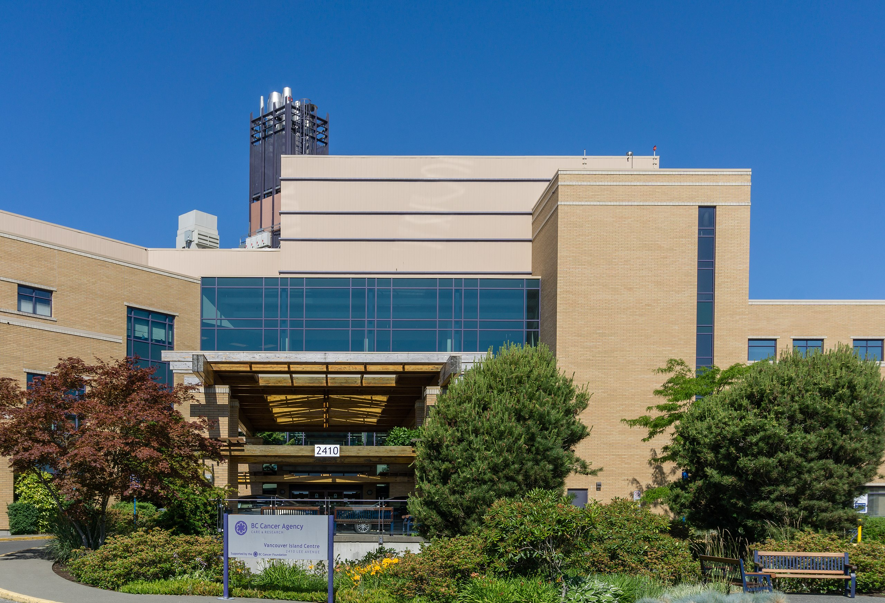

Info for BC Cancer Students
Last updated: May 2024Main entrance of the Island Cancer Center
The astute student in Medical Physics at UVic will notice that sometimes they are not at UVic but in fact are at the BC Cancer Center attached to the Jubilee hospital in Victoria. If you find yourself in this situation don’t panic, it is completely normal to be at the BC Cancer Center and it does not mean that you have been diagnosed with a non-communicable disease.
Vancouver Island Cancer Center

Credit: Michal Klajban, CC BY-SA 4.0 https://creativecommons.org/licenses/by-sa/4.0, via Wikimedia Commons
BC Cancer Supervisor
The UVic Medical Physics Program is a joint program between BC Cancer and UVic as well as UBC and its various franchises throughout the province. Students may be supervised by a Professor at UVic or a Medical Physicist at BC Cancer.
While students supervised by a UVic professor will have been assigned a supervisor upon entry to their program, BC Cancer supervised students will be accepted before being assigned a supervisor. Thus if you happen to be in such a state of limbo, don’t worry too much, but do try to suck up to your adjunct BC Cancer professors.
Supervisors at BC Cancer generally are quite a bit busier than professors at UVic as they have to actually cure cancer in their day to day rather than produce the hypothetical cancer curing postulations in research. So expect to work a little more independently but with a more clinically relevant project if your supervisor resides at BC Cancer.
Medical Physics Internships (Quality Assurance)
Medical Physics students have the opportunity to participate in quality assurance internships at the cancer center here. There are two types of internships: monthly QA and annual QA. Monthly QA positions change every 4 months (in line with the school semesters) and there are 2 positions per semester. It is worth noting that certificate students are given priority in the Fall semester as they will be applying for residency that same semester. Additionally, priority will be given to students who haven't performed QA before, then priority will be given to students who are older/closer to residency. Annual QA is a 6-month internship that will be given to 1-2 students, depending on the level of interest. It is highly recommended that you do not sign up for annual QA if you haven't completed monthly QA at least once.
TRIUMF and others
UVic also has adjunct Medical Physics faculty at TRIUMF and some students may be supervised by faculty at UBC, TRIUMF, or UBCO.